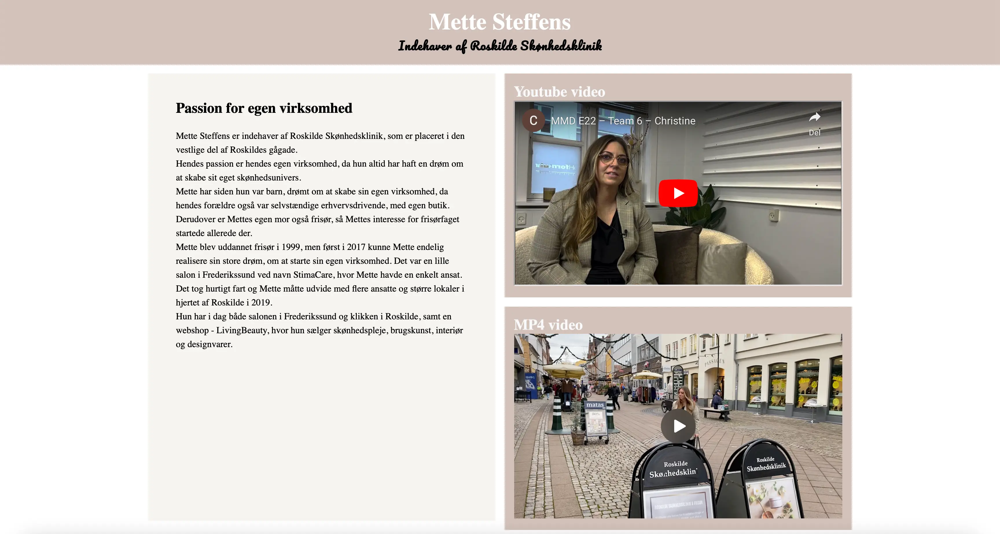

TEMA 5 grundlæggende indhold
05.01.02
Pilotsite
Se websitet her 
05.02.01
Redesign
Se websitet her
I opgave X var vores mål at lave et redesign for en forbedret brugeroplevelse af løsning Y (viden). Min rolle var [indsæt din hovedrolle og ansvarsområder],som jeg udførte [specifik måde med specifikke værktøjer eller metoder] (færdighed). Det lærte mig vigtigheden af [værktøj/metode], som jeg senere brugte i [fremtidigt projekt eller videreudvikling]. Udviklingsprocessen kan sesi [illustrationer eller visualiseringer] i figur 1(kompetence).Det sværeste var [svar], som jeg derfor var ekstra opmærksom på at blive bedre til i [øvelse/opgave/projekt](link) sidst på semesteret.